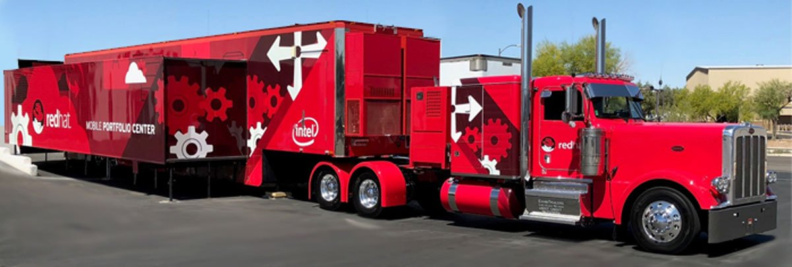
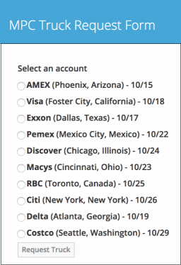
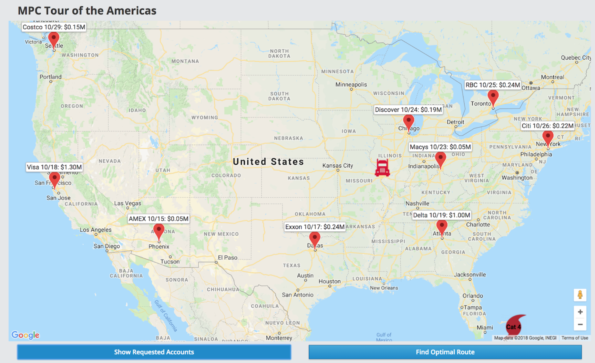
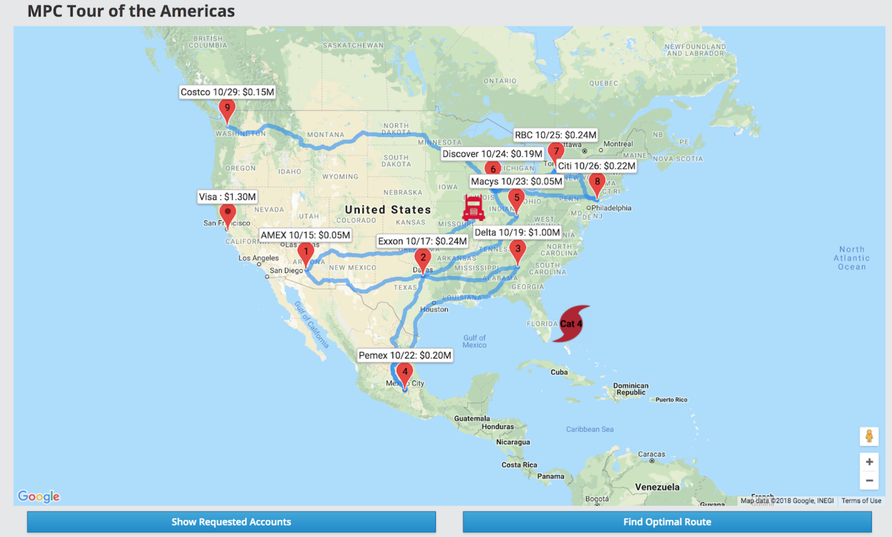

Red Hat Mobile Portfolio Truck dodges storms while keeping Sales happy with OptaPlanner
The Mobile Portfolio Truck is Red Hat’s 18-wheel semi truck bringing enterprise IT solutions to customers
which includes demo kiosks and hands-on experience with Red Hat’s portfolio.
Our goal is to optimize the route of this truck to reach most customers
to maximize revenue opportunity and reduce fuel consumption.
which includes demo kiosks and hands-on experience with Red Hat’s portfolio.
Our goal is to optimize the route of this truck to reach most customers
to maximize revenue opportunity and reduce fuel consumption.

The Red Hat sales team work out the logistics with their customers
such as availability dates and location to host the truck at the customer’s premises to showcase Red Hat’s portfolio.
It is a daunting task to find an optimal schedule for MPC to visit all the customers across North America
based on the customer’s availability dates, location and revenue opportunity size.
Adding to this already complex problem, is the need to accommodate for last minute customer schedule changes
and any unforeseen weather conditions.
such as availability dates and location to host the truck at the customer’s premises to showcase Red Hat’s portfolio.
It is a daunting task to find an optimal schedule for MPC to visit all the customers across North America
based on the customer’s availability dates, location and revenue opportunity size.
Adding to this already complex problem, is the need to accommodate for last minute customer schedule changes
and any unforeseen weather conditions.
Let’s explore how OptaPlanner, Red Hat’s Business Optimizer platform, can help solve these planning problems.
Here is a scenario where the MPC is stationed in St. Louis and scheduled
to visit few customers in Florida and North Carolina for the next 2 weeks.
Due to unforeseen weather conditions in the Caribbean region,
MPC cannot make that trip and need to quickly come up with a new schedule
to maximize the revenue opportunities in other regions
with limited resources such as labor, fuel and other constraints
such as customer’s availability dates, opportunity size and location.
Here is a scenario where the MPC is stationed in St. Louis and scheduled
to visit few customers in Florida and North Carolina for the next 2 weeks.
Due to unforeseen weather conditions in the Caribbean region,
MPC cannot make that trip and need to quickly come up with a new schedule
to maximize the revenue opportunities in other regions
with limited resources such as labor, fuel and other constraints
such as customer’s availability dates, opportunity size and location.
We built a mobile application (deployed on OpenShift Container Platform) for account sales reps
to request MPC for their customers.
The prototype of this mobile application has a pre-configured list of accounts with its locations
and availability date to host MPC.
All the submitted requests are processed and stored in the underlying in-memory datastore (Red Hat Data Grid).
to request MPC for their customers.
The prototype of this mobile application has a pre-configured list of accounts with its locations
and availability date to host MPC.
All the submitted requests are processed and stored in the underlying in-memory datastore (Red Hat Data Grid).

The backend application consists of multiple services also deployed on OpenShift.
One of the services receive the MPC requests from the mobile application,
process the data and stores in Red Hat Data Grid.
Another service is the OptaPlanner service which is configured with various hard and soft constraints
using Red Hat Decision Manager based business rules.
These constraints include MPC need to take break during night and weekends,
drive only certain number of hours in a day, maximize revenue opportunity, visit all accounts.
Here is the screenshot of the dashboard application displaying the MPC requests from the mobile application
and the starting location of MPC.
One of the services receive the MPC requests from the mobile application,
process the data and stores in Red Hat Data Grid.
Another service is the OptaPlanner service which is configured with various hard and soft constraints
using Red Hat Decision Manager based business rules.
These constraints include MPC need to take break during night and weekends,
drive only certain number of hours in a day, maximize revenue opportunity, visit all accounts.
Here is the screenshot of the dashboard application displaying the MPC requests from the mobile application
and the starting location of MPC.

On clicking the Find Optimal Route button, the underlying OptaPlanner service pulls the truck request data
from Data Grid and computes an optimal route based on the configured constraints.
from Data Grid and computes an optimal route based on the configured constraints.

The pins in the map are numbered indicating the truck stops based on the computed optimal route.
Using OptaPlanner, we were able to solve a planning problem of truck’s schedule
by maximizing sales revenue opportunity, reducing fuel and labor costs under constraints such as dates, location and driving times.
by maximizing sales revenue opportunity, reducing fuel and labor costs under constraints such as dates, location and driving times.
Author

This post was original published on here.